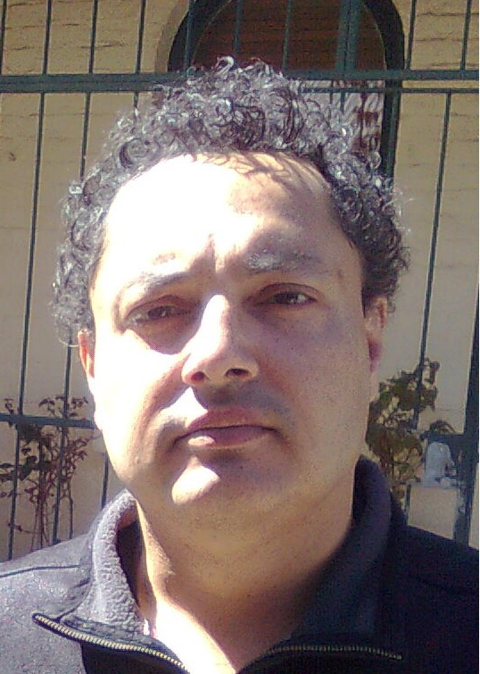
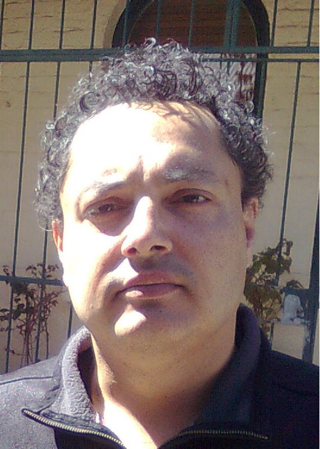

Where did I start?
I first became interested in programming when I had to do an assignment on BASIC in year 9 in high school, which led to my talking my parents into buying me a Dick Smith System 80 with 16k RAM and an audio tape drive. I started programming in BASIC on it, writing various games and working on one in particular that helped me learn about subroutines.
I did a course in Pascal in 1982 and started a degree in Mechanical Engineering at the University of Technology, Sydney (then the NSW Institute of Technology) in 1984 where I learned Fortran and dabbled in some other programming languages (Ratfor, Z80 Assembly code, Forth). I had to withdraw from the course before I finished. In 2010 I had another go at Mechanical Engineering, at Sydney University this time. In first semester I did Engineering Computing which covered Matlab. September last year I had to withdraw from the course having completed 89% of it. I have some experience in HTML and had a web site which made use of HTML & CSS but that is gone now. I also started a course on Udemy in writing applications for iOS, but I didn’t complete it as I prioritised my uni. studies.
Highlights
- 1979 Started programming in BASIC on a System 80, dabbled in Z80 Assembly code.
- 1982 Got a certificate in programming in Pascal on Unix terminals at UNSW.
- 1986 Learned Fortran 77 as part of an engineering degree, touched on Ratfor on Unix terminals at the University of Technology, Sydney (then the NSW Insitute of Technology).
- 1987 Dabbled in Forth on a PC at work.
- 1993 Got my first Mac.
- 1994 Joined Club Mac.
- 1995 Was the Helpline operator for Club Mac.
- 1996 Created my first web site (which I still have).
- 1997 Got my first PC.
- 2006 Did a Certificate III in Business Administration at TAFE.
- 2010 Started another engineering degree at Sydney Univeristy, learned Matlab.
- 2013 Dabbled in RealBASIC on the Mac, now Xojo.
I love programming and get quite carried away while writing code. I would like to work re-writing software to make it more accessible to people with disabilities as a free-lancer. I probably should have gotten back into programming a long time ago but I used to be worried about how obsessive I got programming instead of realising that meant it was the ideal thing to do for a living. This is what prompted me to enroll at RMIT.
I hope to learn how to program in a modern language on modern hardware and more about web design. I also hope to learn more about making programs and sites accessible to people with disabilities.
 
